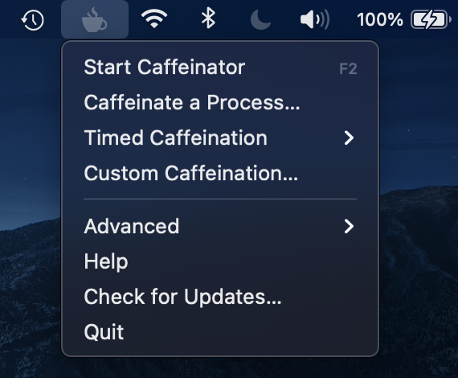
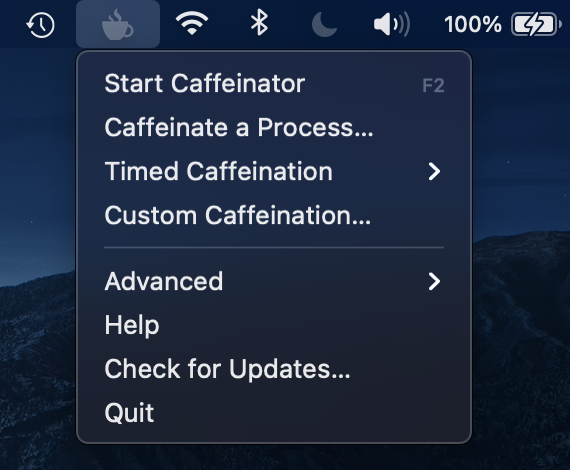

Welcome to Caffeinator
Caffeinator is a tiny, simple, yet powerful menu-bar app that provides a versatile toolset for preventing your Mac from sleeping. It's approachable and designed with simplicity in mind, but also provides power to those who want it. All the code is open-source on the Caffeinator GitHub repository, so feel free to look around.
Features
- Manual sleep prevention ("Caffeination")
- Timed Caffeination
- Process-based Caffeination (prevents sleep until a process exits)
- Fully-featured GUI argument editor for the
caffeinatecommand-line tool
Installation
Interested in getting Caffeinator? Click the Download button at the top of the page, then drag Caffeinator to your Applications folder using the provided Disk Image installer.
Please note: Caffeinator is not signed with a developer certificate. Therefore, the first time you open Caffeinator, you must right-click on the app, click Open, then click Open on the following dialog box.
Help
To learn how to install and use Caffeinator, check out the help guide.
For problems not addressed in the guide, go to Caffeinator's Issues page and see if an Issue addressing your problem has already been opened. If it hasn't, open a new one—be sure to describe your problem, steps to replicate it, and any other pertinent information.
Screenshots
 
